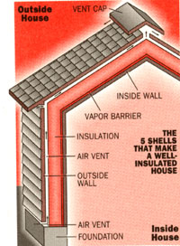
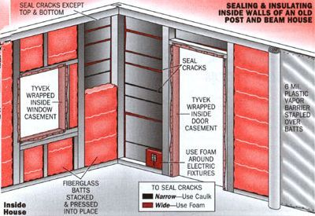
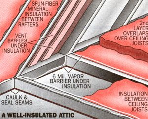
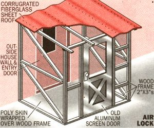

HOME INSULATION FOR THE 1990s
With winter around the bend, now is the time for a complete insulation overhaul.
"If the United States took the money... for the Middle East-aimed Rapid Deployment Force and used it for making buildings heat-tight, the resulting energy savings would eliminate the need for Middle Eastern oil imports-making the Rapid Deployment Force unnecessary."
-The Rocky Mountain Institute
After reading the above quotation, I was reminded of the 1970s energy crisis when fuel prices skyrocketed for cordwood as well as fuel oil. So I surveyed the heat ef ficiency of our New England home for the first time in years. I discovered air leaks in the foundation, mouse-nest cavities in the attic insulation, loose caulk around windows, worn weather stripping on doors, and a cellar window that I must have left partly open all last winter.
If, like me, you've been taking stable fuel prices for granted, it's time to overhaul your home insulation. We must be prepared for the energy uncertainties of the '90s. There are new materials, new energy codes to satisfy; and the environmental effects of insulation to consider.
You'll recall from your school days that heat is a state of matter-a function of the speed at which molecules move. The more energy you impart to them, the faster they move, the hotter they get, and the more heat they release in any relatively cool direction. The fire in your wood-burning stove distributes heat in three ways: conduction, in which energy is transferred molecule to molecule from the firebox to the cooler outside of the stove; radiation, in which infrared rays excite molecules in your cold feet or the living room walls; and convection, in which air near the stove's hot surface warms, expands, and rises to circulate through the room.
INSULATION To reduce heat loss in winter, build energy barriers between living spaces and the outside.
Similarly, your house loses heat in winter and gains it during the summer via conduction (through frame, foundation, windows, and doors), radiation (from any warm surface), and convection (through air circulating in looping currents inside rooms and hollow walls, transferring energy from warm to cool wall surfaces). But the greatest heat robber of all is infiltration, which occurs when air escapes through leaks.
To reduce infiltration, seal the house. To reduce radiant and convection heat loss, impose energy barriers between living spaces and the outside-i.e., insulate. To complicate matters, you need to keep humidity in during winter and out during summer. However, you must prevent it from condensing inside cold wall surfaces, which rots wood and soaks insulation, rendering it ineffective. Install a vapor barrier between living space and insulation.
Imagine the house as a series of shells enclosing the living space: warm inner wall, vapor barrier, house framing, insulation, cold house siding-and between vapor barrier and siding, a constant flow of air to evacuate humidity.
Even the gentlest wind will create a vacuum on the house's lee side, sucking out house air through any opening. A contractor or electric utility can photograph areas of heat loss using infrared film or electronic sensors. They are especially helpful in identifying hidden leaks in log house chinking or joints in brick or stone buildings-both curable by caulking. (For more on insulating your log cabin, see issue #128, Oct/Nov '91, p. 46.) But you can locate or preempt leaks in a frame house by using a little common sense.
Our 200-year-old house sits on a dry-laid (mortarless) stone foundation. Last summer, I went down to a darkened cellar and was surprised to find sunlight glinting through a dozen leaks. I plugged them with a silicone rubber-a caulklike adhesive that will remain flexible for decades. (I avoid liquid styrene plastic "super caulk" that sticks to anything and will remain flexible indefinitely. It contains toluene, a substance that has scrambled the brains of more than one young "paint-sniffer:')
Then I ran a 48"-wide roll of four-millimeter-thick, black plastic-mulch sheeting around the foundation. I stapled the top to the clapboard siding three feet above ground level and then secured it with inexpensive wood lath along top and bottom, spacing it vertically every six feet. I laid the bottom foot of sheeting flat along the ground and placed old hay bales up against foundation and sill.
This combination diminishes the wind's vacuum effect and keeps out snow that may drift against the house, melt, and seep in. Soaked insulation will rot the sill or freeze and heave the foundation. Next spring I'll remove and store the plastic and use the hay for garden mulch.
Our clapboards and windows were so weathered that a gust from a proper northeastern would suck little puffs of snow into the north side of our living room. At first I covered the whole wall with plastic, but that's old-tech. I recently wrapped the house bit by bit with Du Pont Tyvek, a flexible plastic membrane that's placed between sheathing and siding in new homes. The Tyvek keeps wind from coming in but lets moisture out. After removing old clapboards, I stapled Tyvek over the exposed sheathing boards, placing tape over the staples and seams. As I tore out interior walls, I pumped silicone/latex tube caulk into seams between sheathing boards and into cracks and knotholes-but not into top and bottom of wall cavities. Air must be permitted to flow up and through the outer wall to ventilate insulation.
Outside, I nailed siding over the Tyvek. Had walls been thinner, I'd have applied rigid-foam insulation board before the clapboards went on. Or, I'd have erected super-insulated double walls inside-a partition of 2 x 4's staggered between outer wall members. Leaving a 2" airspace between double 2 x 4 walls filled with 3 1/2" roll insulation gives an R-value of 30 or more. (See "Super insulation" issue #101, Sept/Oct '86, p. 47.)
I chipped out loose beads of dried-out old caulking around casements, plumbing and utility conduits, carefully collecting and disposing of it. Old caulk may contain poisonous white-led pigment. I replaced it with silicone-latex, 30-year-life tube caulk. I use modern aerosol foam.
Canned foam is great stuff; it acts as both a vapor barrier and insulator rated at R-4 per inch. The nonexpanding kind is good for filling narrow cracks. To fill larger cavities, there are varieties that expand from 1 1/2 to four times the bulk that burbles out of the can. A powerful adhesive, it sticks to any clean surface, and a $7 can is equal to at least $20 worth of tube caulk. You can pump foam around electrical fixtures (but not inside the outlet box), and into inaccessible crannies. If foam oozes out of bounds, compress it with a wet putty knife or let it harden and trim with a sharp knife. Foam needs moisture to expand, so spray dry cavities with a little water. Have nail polish remover on hand to clean the jet. Foam will harden in the plastic applicator tube provided, but I find that soda straws serve as well, and "bendy straws" can reach hidden cavities.
Even if your house was professionally insulated, check inside door and window casements by using a thin pry bar to remove trim boards. I found heat-leaking cavities around every casement in our place. Don't pack window casements full of expanding foam; it can swell and pinch sashes, making them stick. Squirt in just enough to fill cavities side to side. Once replaced, wood trim will need touching up, but you'll get years of energy savings for your trouble.
One warning: many canned foams use ozone-layer-destroying CFCs or HCFCs as a propellant or expander. Look for an "ozone safe" banner on the can. The fluorocarbon freon is also used to expand rigid foam panels made of urethane and isocyanurate. Freon has been replaced by a more benign expansion gas in expanded styrene, so I look for Styrofoam board.
Back when oil cost 19 cents a gallon, homes were built to lose their air contents several times an hour. With fuel at one dollar per gallon, you want to seal up-but don't overdo it. Air exchange between house and outdoors should be at least a half-houseful an hour. If there's less, indoor air pollution, such as the cancer-suspect formaldehyde (used as a preservative in carpets and upholstering), may build up. If your house sits on radon-bearing rock, the carcinogenic gas may seep in and accumulate as well.
Plus, with furnace, fireplace, or exhaust fan drawing out 600 cubic feet of air a minute, a too-well-sealed house may become a vacuum chamber that can suck exhaust gases into living spaces.
A properly vented and tuned furnace or brisk wood fire produces little hazardous carbon monoxide. But draft from an open window on a downwind wall or a strong drawing flue can overpower a weaker exhaust, and "backdraft" from smoldering wood embers or a poorly oxygenated oil or gas fire may actually kill you in your sleep.
If your wood-burning stove draws well with a window open, but smokes even a little when the house is closed up, you may have a problem. Crack open a cellar window and open a hole in the floor behind the stove for combustion air. Better, run metal ducting from the stove to the outdoors. If cooking odors linger too long, you can unseal the attic door or cut small closable vents through the wall or ceiling.
Test air exchange by closing up the house and watching smoke from incense or a smoldering cotton string placed on the floor. If smoke rises straight up and pools at the ceiling, you probably have too little air exchange. If you have any doubt, find an insulating contractor with the equipment to analyze air pressure, air exchange, and heat loss.
Heat energy radiates through hollow walls and is conducted through solid framing. The air between wall studs will develop convection currents that transfer heat from inner to outer wall. To stop all three processes, fill the wall with a nonconductive air-movement inhibitor-insulation-and face it with a radiation reflector or absorbent.
In new homes or renovations you can apply high-R-value rigid foam with an infacing foil backing over sheathing on exterior walls. But foam board is expensive; the most R-value for the buck comes from mineral-fiber insulation. In conventional frame walls with studs placed 16" in the center, stock insulation goes up quickly.
Roll insulation backed with a kraft paper or reflective foil-paper "vapor barrier" having staple flanges along the edges was once universal. But foil dulls, and paper is both an ineffective vapor barrier and flammable. Unbacked, semistiff frictionfit batts pose less fire potential, and you can see to fit them snugly. If using unbacked batts, wear a respirator.
Insulating our old home was a challenge, even with the interior walls torn off. It is framed with 6"-square studs spaced anywhere from one to two feet apart. Using R-19 Owens-Corning pink panther fiberglass, I had to cut batts 5 1/2"-thick and 15" wide to fit horizontally between studs.
I packed shreds of insulation loosely into odd spaces at the ceiling and floor so that the cavities would not leak heat. Expanding foam went into narrow spaces where I couldn't pack fiberglass easily without compressing, which squeezes out air and reduces insulation value.
To keep house moisture out of the insulation, I stapled six-millimeter, clear polyvinyl plastic sheet to the wall framing. This must be done immediately-especially if you don't plan to install wall paneling or drywall right away-because exposed fiberglass can shed tiny filaments that can cause lung problems.
To be effective, the barrier must form a contiguous, air-proof sheath around living space. I applied clear poly tape over staples and joints in the sheet. At the ceiling and floor, I caulked the seam between the floor and wall framing. Then I caulk-glued, stapled, and poly-taped edges of the sheet to beams.
You don't want to tear out perfectly good walls when insulating. Your best bet is to use blown-in insulation. Loose fiber glass, mineral wool, or cellulose recycled from newspaper and treated with fire retardants is blown through holes drilled through hollow walls of frame buildings. If applied uniformly, blown fiber adds R-3 or more per inch of thickness, giving you up to R-12 in a conventional 2 x 4 wall, or R-19 in a house framed with 6"-wide studs. Don't be tempted to rent a blower to pump insulation into your own walls. It takes an experienced pro to remove siding, drill through sheathing, pack insulation uniformly into all wall cavities, and then seal the outside so it won't leak air.
Don't bother to insulate in any manner without applying a vapor barrier inside. Poly sheeting doesn't make very attractive wallpaper, but interior paints such as Glidden Insul-Aid will seal in moisture. Caulk thoroughly around floor and ceiling moldings. Keep interior walls and ceilings freshly painted. Today's light-colored interior paints reflect much radiant energy. Drapes, furniture, and wall hangings absorb most of what's left.
In our latitude, the energy code mandates a minimum of R-30 in the roof or top-floor ceilings. That's 8 1/2" of fiberglass, rock-wool, or cellulose. It can go in the roof, in the attic floor, or both. Placing 5 1/2" (R-19) of insulation between 6" framing in both roof and in attic floor will give you R-40. With end walls insulated and eaves filled loosely, snow on your roof won't melt over rafters.
Our rafters, in contrast, did melt snow, and I found that we had only three inches of aged insulation-much of it mouse-holed or compacted-between ceiling joists in the attic floor. I vacuumed and fluffed it, filled the mouse holes, put a layer of 6" batts on top. In the part of the attic used for storage, I covered rafters with two layers of 1" rigid-foam R-6 panels (R-6 x 2 = R-12), and then covered that with 1/2" plywood (R-5).
Next I insulated the attic floor by installing short lengths of rigid-plastic vent-space baffle along eaves at the perimeter of the insulation. If you plan to install fiber-glass in a sloping roof, staple vent-space baffles along the underside of sheathing to maintain eaves-to-roof-peak ventilation.
You also need a contiguous poly-vapor barrier between living space and the bottom of roof insulation. If insulating be tween roof rafters only, staple poly to rafters under insulation, double-fold and tape seams. When insulating the attic floor, lay overlapping sheets of poly between joists and snugged down into the spaces between before placing insulation.
Handling insulation in hot attics is no fun. Glass fibers stick to your sweaty skin, and can itch. To avoid handling, rent a blower to put rock wool or fiberglass insulation into the attic floor-but be doubly sure to use a respirator. Loose cellulose can be blown in as well. However, because it lays out more easily than mineral fiber, it can be easily distributed with a rake.
Working on an unfloored attic, please don't try to hop around on the floor joists. After slipping and pushing a boot through the kids' bedroom ceiling, I hauled a pair of 4 x 4 plywood panels into the attic and leapfrogged them around to provide a solid kneeling floor.
It seems that what's out of sight in the cellar is out of mind as well. Many centrally-heated homes lose more energy through a heated basement than through the roof.
Solid, heat-conducting rock, brick, and poured concrete have only fractional R-values, and even with their open cells covered, 8"-wide concrete blocks rate only R-1 1/4. Newly built foundations are insulated with 1" of rigid foam below grade, plus a collar of another inch over the portions above ground level. In older homes, you'll need to attach foam panels inside with metal lath or wood furring strips. Fasten them to brick or concrete cellar walls with concrete nails, or to stone walls with screw anchors cemented between rocks.
It may be easier to insulate your cellar walls with rolled fiberglass set into a floor-to-ceiling, 2 x 4 partition. As suggested above for a sloping attic roof, place air vent baffles behind fiberglass and a vapor barrier in front. A raised, insulated cellar floor can prevent up to 15% of energy loss. Allow for water drainage if walls or floor leak even a little. (For details, see any of the books or articles on building a rec room in the basement.)
Most unintentional cellar heat loss is due to radiation from a poorly insulated water heater and pipes, furnace and hot air ducts, or a long run of flue pipe. You can cure most of the problem yourself. A blanket over the hot-water heater can save plenty (your electric utility company may install it free). Strips of duct tape-the real thing from a heating supply outlet, not cheap "Duck" tape-will seal seams in hot air ducting. You can tape foam sleeves to insulate water pipes and install an insulated flue between the furnace and chimney.
But fire and building codes are strict when it comes to insulating furnaces. Consult a licensed heating contractor, and have him install an automatic flue damper that closes when the flame has been out long enough to exhaust combustion gasses but keeps clean warm air from being lost up your flue.
We only use the oil furnace to supplement wood stoves during the depth of winter, and the unheated cellar can get cold. To keep plumbing from freezing up, I wrapped electric heat tape around the pipes (soil pipe leading to the septic tank as well as the water supply) and enclosed the water pump in an insulated box with a light bulb inside. Between the joists under the living room floor, I installed 6", foil backed, rolled fiberglass, with foil facing up to reflect radiant heat back into the room. With a fiber-pad-backed carpet carrying an R-value of over 2, our feet stay warm during the wood-heat season.
More energy can be lost through a few doors and windows than through walls and roof combined. Small wonder; rated at only T-0.9, a glass pane conducts and radiates energy both ways, which is great during sunny winter days but inefficient at night (and the reverse in summer). During the `70s, when petroleum threatened to rise to $50/bbl (it now sells for about $18), a number of door/window-insulating ideas were developed-not all of them practical. I remember one dual-pane window that could be blown full of insulating styrofoam beads. Problem was, getting them all out was nearly impossible, and little white bits flecked the inner panes.
In modern energy-saving, dual-pane sashes; interpane spaces are filled with argon or another inert gas, which, with its heavy molecules, is less conductive than still air. A low-E coating-a super-fine spray of reflective metal-is applied to inner surfaces of panes. Much as the metal grid in your microwave oven door lets light out but keeps microwaves in, the low-E coating lets visible light through but reflects infrared. Reflecting heat inward in the north, and outward in the south, the low-E, gas-filled sash has an R-4 rating.
The newest development is a window with low-E coatings on a thin plastic film suspended in argon gas between dual glazing and rated at R-8. New "hard" low-E coatings can also be applied to storm windows. So, low-E main and storm windows can combine to be almost as energy efficient as your walls.
Energy codes require insulated doors and windows with air and heat gaskets around casements in new construction and major renovations. You can replace doors and windows in your older home, but for a price that may not be repaid by energy savings. The best multiple-glazed windows offer a rating of R-8 and cost $150 to $350 apiece. Installation labor can up the cost to $500 per window.
A metal-and-foam-sandwich entry door carries an R-15 rating. If used with a good, airtight dual-glazed wood or metal-and-foam storm/screen door, the entry's R-rating will approximate the wall's. But, such an entry can cost $1,500 or more to install. Also, when replacing any window, check your building code. It may require that old nonwood casements come out, increasing the whole expense.
Using costly high-tech methods isn't the only answer. Jalousies, sunshades, lattice blinds, and awnings also help insulate doors and windows. They are just as effective today as sun and heat radiation barriers as they were in Scarlet O'Hara's day.
In our cold Yankee climate, we heat only the most used parts of the house. Each fall I cover doors and windows in seldom used rooms with foil-backed 3 1/2" - fiberglass, and then cover that with sheets of poly film stapled and duct-taped to edges of wood trim. Poly goes on the outside as well. To eliminate wind flap, I tape wood lath in a cross pattern on the outside. With the fiberglass offering R-13, the glass R-1, the 2"-thick layer of dead airspace behind the poly adding R-2, and the two sheets of plastic another R-2, I have almost R-19. Cost per window is less than $5 and the materials are usable for years if removed and reinstalled carefully. It's ugly but cheap and effective.
Over windows in frequently used rooms, I screw fixed-pane, wood-sash, storm windows snugly to the outer window-trim boards. I've replaced the droopy felt weatherstrip with 3/8"-wide x 3/16"-thick EPDM rubber weather-gasketing around the inside of each stormwindow frame. Sold by W. J. Dennis & Co., of Elgin, Illinois, for over 25 cents/foot, EPDM isn't cheap. However, it is 10 times more effective than felt or easily torn-open cell foam stripping. Its self-stick backing adheres to any dry surface. With a tough, closed-cell skin, it will last for 10 years or more. Not as sturdy as EPDM is the 1 1/4" wide, self-sticking, closed-cell, vinyl weather strip used to seal between truck beds and camper tops (Its width also makes it useful on uneven surfaces such as the bottoms of old window sashes.)
On the inside and outside of windows we want to see through, I fasten window-clear plastic sheeting, which is double the cost of semiclear poly but worth it. Anti-wind-flap lath crosses are held on the outside with clear poly tape. If the putty keeping glass panes in place is maintained, the old windows are airtight and offer R-values of 3 to 4. Thick, tight-closing drapes bring the R-value up to 5 or 6.
More effective than drapes are window quilts: roller shades of two layers of fiber- fill with a reflective mylar sheet between them. Boxed at top and held by airtight guides at each side, quilts offer an insulating value of about R-4. You can also buy or make insulating drapes with a boxed cornice at top, edges fastened to walls, and bottom weighted down or on tracks to seal with the floor. They will more than double the R-value of an old-style picture window, sliding door, or window wall.
I'd suggest that you avoid those heat-shrink, plastic film, indoor-window insulating kits that sell for about $3. The film tightens up fine if you heat it evenly, but the two-faced tape that comes with it won't come off its paper backing unless it is fresh from the factory. Indeed, I have yet to find a tape that won't remove paint from the walls when I peel it off in the spring. You're better off fastening plastic film by folding the edges of the plastic two or three times, and then compressing it with thin wood strips tacked around the outer edges of the window's wood trim.
We have thick, old, wooden doors and well-insulated wooden doors (combination storm/screen) at the entries. I taped clear poly over both sides of the glass in both doors to give the same R-value as an expensive triple-glazed sash. To make an effective weather seal, I fastened EPDM to 3/4"-square wood strips and tacked it with small nails to the insides of both door frames. Along the inside of the door bottoms, I installed adjustable, rubber edged aluminum floor sweeps. At night we roll "draft dogs" (fabric tubes filled with sawdust) against the door. The fabric comes from cutoff legs of old jeans; the sawdust comes straight from the woodpile. When a blizzard howls, we pack them along the door sill between the main and storm doors as well.
Of course, the draft dogs don't last long if our pair of pets gets ahold of them. Some of the poly does need annual replacing thanks to the house beasts scratching to get in on a cold evening. I screwed scratch panels of 1/4" plywood over the bottom half of the storm doors, but the great fools jump up and claw the poly on top if we don't answer on their very first howl. The tom cat hurls himself at the plastic with all claws extended if not admitted on first meow. By winter's end, there's as much tape as poly sheet covering the front door and the cat's favorite living room window. But, we all stay warm and fuel efficient at a reasonable insulating cost.
We all want to conserve energy, but we also need to get the most fuel efficiency for the dollar. Tightening siding and caulking foundation, doors, and windows will eliminate 30% to 50% of the heat a typical house loses to infiltration, and do so at a negligible cost. An insulation contractor can calculate savings from added protection, but you can do a rough estimate yourself. Assuming you've already caulked the house thoroughly and have some roof insulation and storm windows and doors, multiply annual heating costs by 20% each for maximum potential cellar and roof heat loss, and by 30% each for wall and window or door loss.
Now price needed fiberglass, foam panels, and replacement windows and doors and calculate the costs of bringing R-values up to snuff. Then divide costs by annual savings to find time needed for payback. In our house, R-R windows would add only R-2 over the R-6 of the old storms I use, and would cost at least $2,500 (and that's if I did the installing). I calculate that they would provide a 2/8 or 25% reduction in the window's 30% contribution to a loss of a $1,000 cost per year. If we heated entirely with oil )-$75 per year at best-it would take 33 years to make up the cost. However, if we heated with a combination of wood and oil at a cost of about $500 per year, our great-grandchildren would still be waiting for a full payback.
|
 |
 |
 |
|
 |
|
|